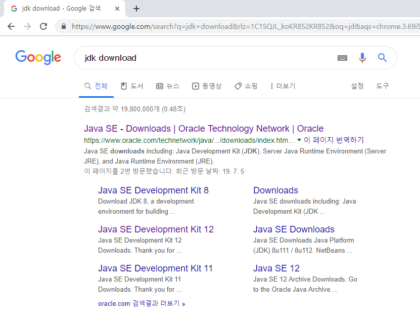
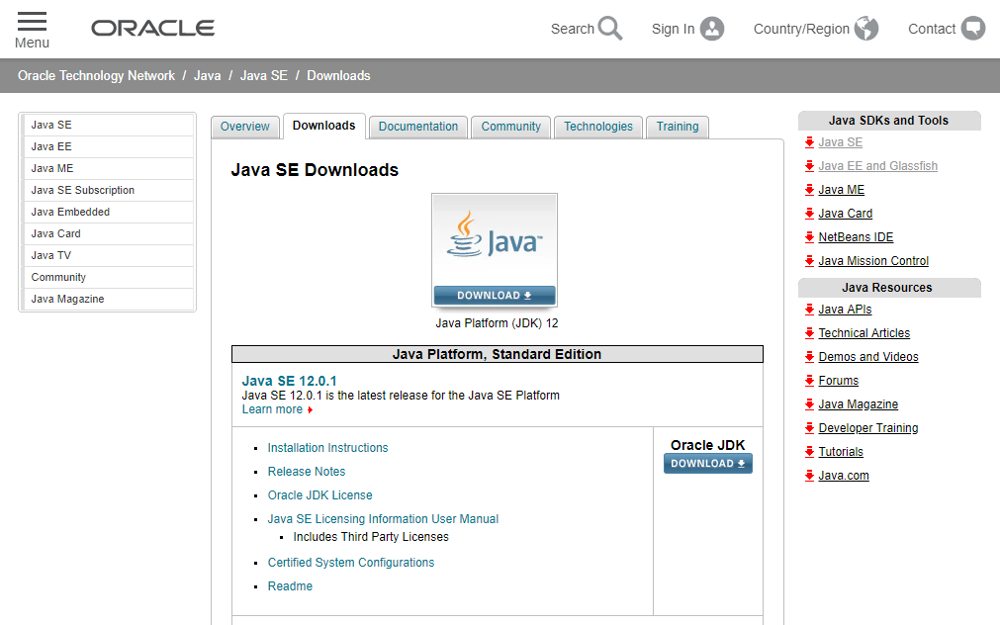
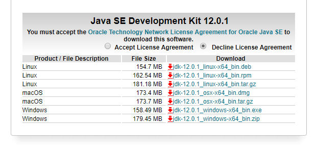
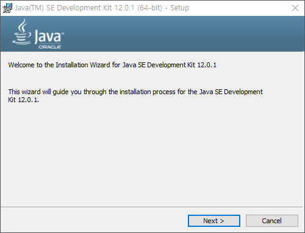
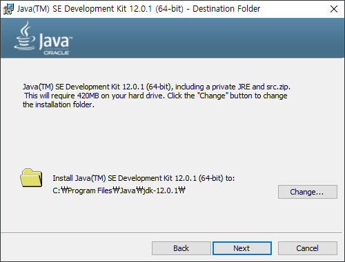
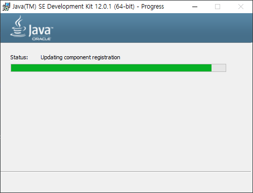
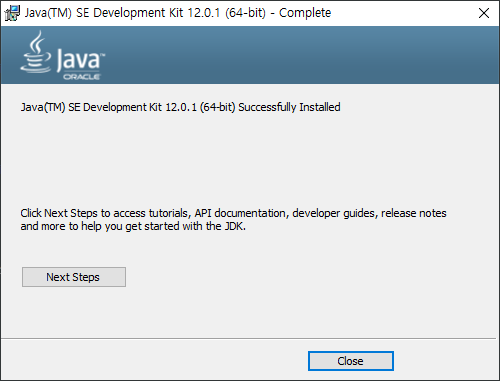

자바설치
먼저 컴퓨터에 자바를 설치하여야 합니다. 자바는 오라클 사이트에서 다운로드 받을 수 있습니다.
먼저 검색엔진에서 jdk download를 입력해 봅니다.

검색된 링크를 클릭하여 다운로드 사이트로 이동을 합니다.

다운로드 페이지에서 download를 선택합니다. 하단으로 페이지를 스크롤하면 다음과 같이 설치 파일을 내려 받을 수 있습니다.
설치파일을 다운로드 받기 위해서는 라이센스 사용동의가 필요합니다. 페이지에서 Accept License Agreement를 선택하세요. 자신의 운영체제에 맞는 파일을 다운로드 받을 수 있습니다.

다음은 윈도우10 운영제체에서 JDK를 설치하는 방법입니다. 64비트 기준으로 x64 버전을 다운로드 받습니다. 다운로드 받은 설치파일을 실행합니다. 설치 환영 인사말이 출력됩니다. 다음을 선택합니다.

설치할 경로를 입력합니다. 기본 설정값으로 설치를 하는 것을 합니다. 다음을 클릭합니다.

설치가 진행이 됩니다.

잠시 기다리면 설치가 마무리 됩니다.
